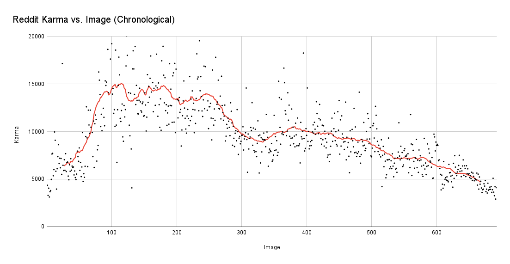
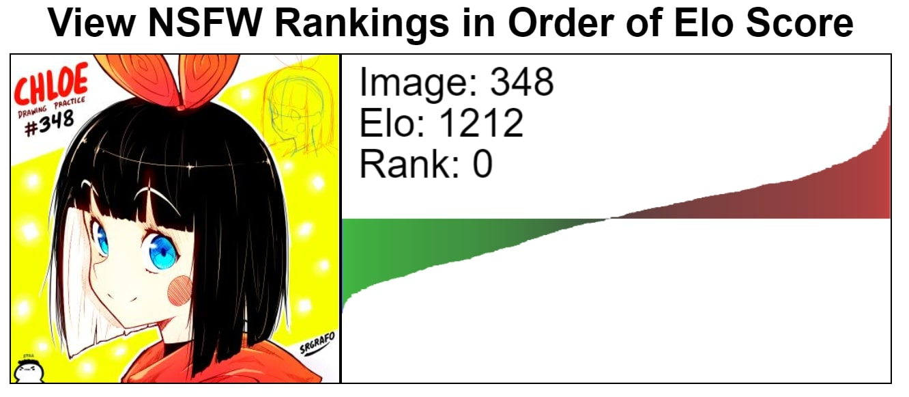

Let's say you want to rank some images, about 650 of them at the time. Not just which images are better than others, but how much better each image is compared to all the others. We could go through and give each image a score by hand, but turns out people are pretty bad at being consistent with how they rate things on an arbitrary scale.
These images happen to have a reddit page with thousands of users voting on them. What if we use those scores to rank our images?

Turns out upvotes don't really tell us much about the quality of the image either. There are two problems; first, that older images have more time to collect upvotes than newer ones, and second, that the page traffic can change over time, also affecting the number of upvotes.
To try to build our own image ranking system that isn't biased toward older images, we can steal an idea from the chess world - Elo scores. We assume each player, or in this case each image, has a score that describes their innate performance. When we compare two images, the difference in their elo scores gives us an expected probability of winning for each image from 0 to 1. Subtracting this probability from the actual outcome of the match (win=1, tie=0.5, lose=0) tells us how much to adjust the elo score for each image.

Early versions of the rating and score pages looked like this. The website itself is obviously hosted on github, and all scripting is written in vanilla Javascript with no libraries - that's what allows the graphing and sorting functions to run so fast. User ratings are submitted to a Google Sheet via Apps Script, and then every hundred ratings a separate function calculates the changes in elo scores as a result of the comparisons.
Some miscellaneous details; the graph itself is actually a SVG being dynamically drawn by the page, because HTML canvas elements enforce antialiasing. Pairs are chosen such that each image appears once on the left side, and pairs are no more than 5 ranks apart by elo score. There are two other datasets that can be viewed at the "/search" page; reddit score, and NSFW Elo score which I did 6000 comparisons to create. The Char:Type coloring for the plot makes Cat subtypes darker, while Cosplay and Hoodie subtypes get lighter and lightest respectively.
Thanks to SrGrafo for providing assets and design feedback that gave the site the look it has now.
Please submit bug reports to me on the Discord (Astronavigator) or on Reddit (NetworkNavigator)